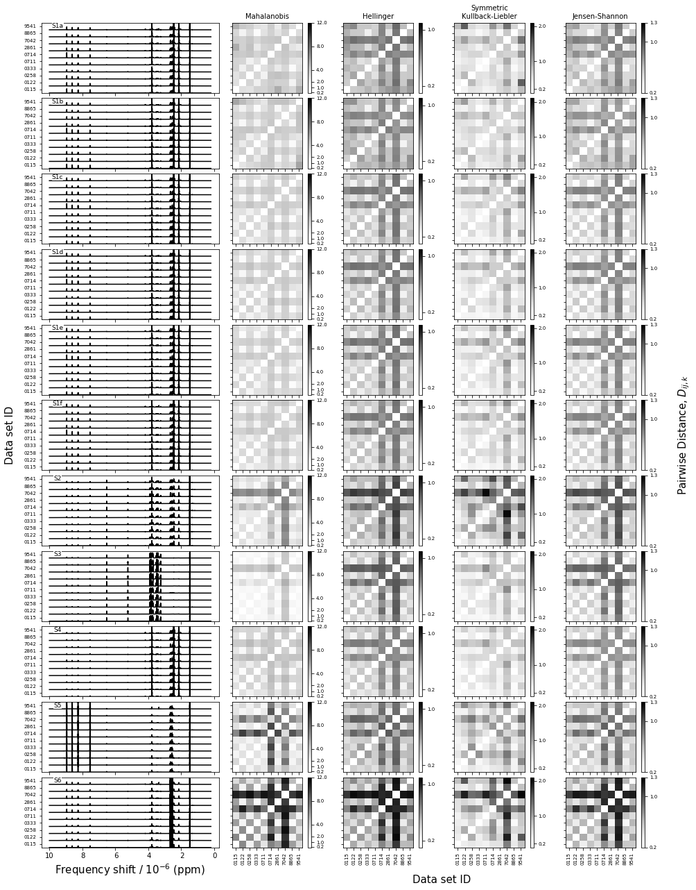
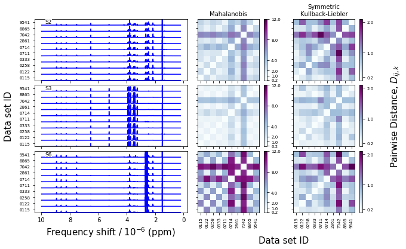
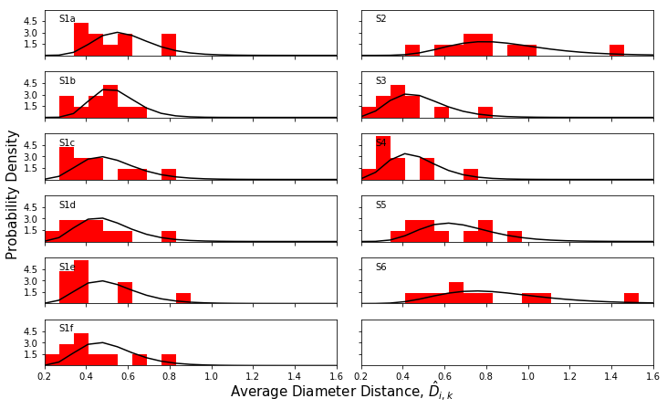
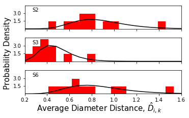

Example usage and output¶
This document shows example usage and output from the qMET interlaboratory study analysis code. It shows how to generate the project metadata,
Imports¶
In [1]:
%matplotlib inline
import matplotlib.pyplot as plt
import matplotlib
import qmet
import numpy as np
Prepare project data and metadata¶
Sample labels¶
In [2]:
Spectrum_names = ['S1a', 'S1b', 'S1c', 'S1d', 'S1e', 'S1f', 'S2', 'S3', 'S4', 'S5', 'S6' ]
Labels = ['0115',
'0122',
'0258',
'0333',
'0711',
'0714',
'2861',
'7042',
'8865',
'9541']
Spectral data¶
This section defines the file containing the project data, the number of bins that will be used in the histograms, and the range of the project data that will actually be used (in this case, some data is removed due to inconsistencies in suppressing the water signal).
In [3]:
#File containing the raw NMR data
data_file_name = "mann.test"
#The range of the data that will actually be used
range_to_use = list(range(959)) + list(range(1058,1860)) # This removes an extra region around the water signal region
#range_to_use = None
#Number of bins for the histogram
num_bins = 20
X-data¶
Bin centers for binned NMR spectra
In [4]:
peakPPM_full = np.genfromtxt('bins.txt',delimiter=',')
Distance metrics¶
The interspectral distance metrics used to calculate
In [5]:
jeffries = r'Symmetric Kullback-Liebler'
jensen = r'Jensen-Shannon'
hellinger = r'Hellinger'
mahalanobis = r'Mahalanobis'
nmr_distance_metrics = [dict(metric=mahalanobis,function='mahalanobis'),
dict(metric=hellinger,function=qmet.hellinger_hyp),
dict(metric=jeffries,function=qmet.jeffries),
dict(metric=jensen,function=qmet.jensen_hyp)
]
Creating the Project and loading the data¶
Creating the Project¶
In [6]:
synthetic_samples_project = qmet.Project(x_data_list=peakPPM_full,
Sample_names=Spectrum_names,
Data_set_names=Labels,
distance_metric_dict=nmr_distance_metrics,
range_to_use=range_to_use
)
The data process workflow¶
In [8]:
synthetic_samples_project.process_mahalanobis()
synthetic_samples_project.set_distances()
synthetic_samples_project.set_zscores()
synthetic_samples_project.set_zscore_principal_components()
synthetic_samples_project.find_all_outliers()
Data Visualization¶
Distance measure figures¶
This example shows the default distance measure figure with no arguments.
In [9]:
out_fig = synthetic_samples_project.plot_distance_fig()

Here is an example plotting only three samples and two distance metrics.
In [10]:
out_fig = synthetic_samples_project.plot_distance_fig(plot_range=[6,7,10],cmap='BuPu',linecolor='b',distance_metrics=[mahalanobis,jeffries])

Average distance histograms¶
This is the default output of the
In [11]:
out_fig = synthetic_samples_project.plot_distance_histograms(jeffries)


In [ ]:
In [ ]:
out_fig = synthetic_samples_project.plot_distance_histograms(jeffries,numcols=1,plot_range=[6,7,10])